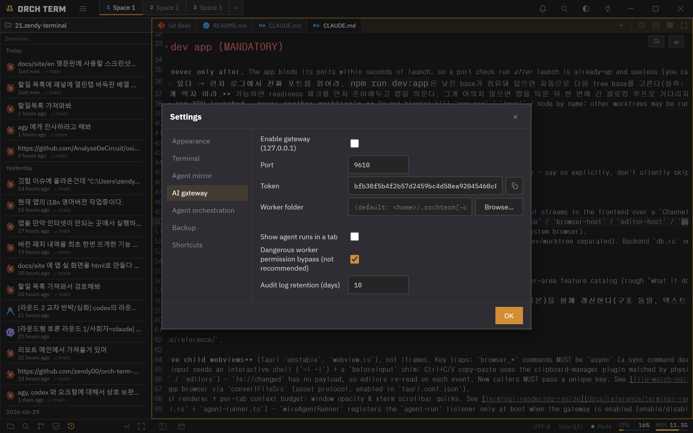

Flagship features · AI gateway HTTP API
AI gateway
An external program sends {ai, prompt} over a local HTTP API, and orchterm spins up that AI (claude·codex·agy) in a worker tab, runs one turn, and returns the response synchronously — an automated call with no human in the loop.
What it does
When an external program (a script · CI · an in-app browser page) sends a one-line prompt, the gateway spins up a worker AI in a tab, runs one turn, and returns an OpenAI-compatible response while holding the connection open.
POST /run{ai, prompt}worker tabrun 1 turnGetting started
-
Turn on the gateway (applied after restart)
A fresh install starts with the gateway on. Turning it off or back on takes effect after an app restart.
-
Check · copy the Bearer token
The token is issued randomly once, the first time. Check and copy it under Settings → AI gateway and hand it to the caller. Every request needs
Authorization: Bearer …, and a mismatch returns401.
① It binds to 127.0.0.1 only, so there's no external network exposure · copy the token and hand it to the caller.
Workers run from a fixed folder (~/.orchterm/gateway), so agent trust approval is needed only once, the first time.
API call — POST /run
The request is POST /run (alias POST /v1/chat/completions). Put the AI to call and the prompt in the body, and it holds the connection until the response arrives, returning OpenAI chat.completion JSON synchronously.
POST /run · request
$ curl -s http://127.0.0.1:9610/run \ -H "Authorization: Bearer $ORCHTERM_GATEWAY_TOKEN" \ -H "Content-Type: application/json" \ -d '{ "agent": "claude", "prompt": "PING", "session": "s1" }'
200 OpenAI chat.completion · response
{
"id": "req_8f3a…", "object": "chat.completion",
"choices": [
{ "index": 0,
"message": { "role": "assistant", "content": "PONG" },
"finish_reason": "stop" }
],
"result": "PONG", "error": null // result·error = legacy compat
}
504 if it hasn't finished.| Body field | Meaning |
|---|---|
agent / ai | Worker type — claude · codex · agy (default claude) |
prompt / messages | The prompt to send. If both are empty, 400 |
session | keepalive key (optional) — a value reuses the worker, empty makes it one-shot |
model | Accepted but currently ignored (for later) |
Session keepalive (multi-turn)
Give a session value and the same session reuses the same worker — multi-turn with context preserved. Leave it empty and it's one-shot, closing the worker after the response (“the worker disappeared after the response” is not a bug but this very behavior).
Worker safe mode (ON by default)
Gateway workers run in safe mode by default — they don't use the dangerous permission-bypass flag. Bypass mode (unattended · faster but not recommended) is only enabled via the setting “Bypass dangerous worker permissions”.
Audit log (request/response records + viewer tab)
While the gateway is on, it logs every request that passes authentication, by date — prompt · timestamp · total time · status (ok·error·timeout) · down to the raw response. Open the viewer tab with the palette command “Gateway audit log”.
{ "agent": "claude", "session": "s1",
"prompt": "remember: banana73" }{ "result": "Got it. I've remembered 'banana73'.",
"error": null } // totalMs 3142 · status okRetention days are set in settings (default 10 days) — dates beyond that are deleted automatically. The full raw response is stored.